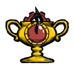

| Accomploshrine | |
|  |
|
| Crafting | |
| Tab | |
| Tier | |
| Perk | A sense of accomplishment for those with nothing else to live for. |
| “ | I want to use it, and I want the world to know what I did. | ” |
| –Wilson | ||
The Accomploshrine is a craftable structure only available on the PlayStation 4 version of Don't Starve. It costs 10 Gold Nuggets, 1 Cut Stone, and 6 Gears to craft and requires an Alchemy Engine to prototype.
The Accomploshrine's sole purpose is to be used to grant a PS4 trophy. To attain the trophies, the player must first build the Accomploshrine to earn the "Look on my works, ye Mighty," trophy, then activate the Accomploshrine a total of 725 times within one game to earn the "...and despair!" trophy. After every 25th activation, the shrine will release a firework, and the player will remark on their accomplishment.